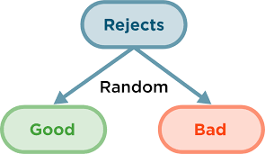
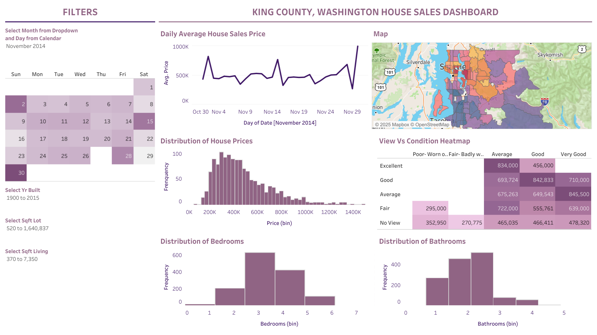

This project is a step-by-step guide on how to build a real estate price prediction website. The project consists of three main components: Machine Learning Model, Flask Server, and Frontend Website.
This project covers data science concepts:
- Data loading and cleaning
- Outlier detection and removal
- Feature engineering
- Dimensionality reduction
- Hyperparameter tuning using GridSearchCV
- K-fold cross-validation

Developed a reject inference framework to improve credit risk prediction for rejected applicants using historical loan data.
Performed Good-in-Bad analysis to estimate potential risk profiles of rejected cases and integrated them into the training dataset for model enhancement.
Utilized Gradient Boosting Machine (GBM) in DAVinCI Labs to build and evaluate predictive models.
Analyzed key financial features such as credit score, debt-to-income ratio, outstanding debt, and delay from due date, improving model robustness and fairness in credit approval decisions.

Built a machine learning model to detect fraudulent credit card transactions using Python. Conducted data preprocessing, exploratory data analysis (EDA), and feature selection to understand class imbalance and transaction patterns. Applied undersampling techniques to address imbalance and trained a Logistic Regression classifier using Scikit-learn. Evaluated performance through accuracy, precision, recall, and F1-score, optimizing thresholds for improved fraud detection.

Developed a data-driven HR analytics dashboard in Tableau to visualize workforce trends and performance insights. Conducted data cleaning and transformation to prepare HR datasets for analysis. Created calculated fields and parameters to track hiring, termination, and active employee metrics. Designed interactive visualizations for demographic breakdowns by gender, age, and education, and analyzed salary patterns across departments and education levels.

Developed an interactive Tableau dashboard to analyze housing market trends in King County, Washington. Performed data cleaning and transformation to visualize key metrics such as average house price, distribution by price range, and property condition. Integrated geographic mapping and heatmaps to explore spatial price variations and correlations between house condition, view quality, and pricing. Implemented filters for time period, year built, and square footage for dynamic exploration.

This study leverages a Decision Tree model on the IBM HR Analytics dataset to predict attrition based on job satisfaction and work-life balance. The model achieved an accuracy of 82.49%, providing actionable insights for HR departments to develop targeted retention strategies.

This project provides a comprehensive visualization of COVID-19 data, focusing on case counts, vaccination rates, and regional trends. Using Tableau, the dashboard transforms raw datasets into actionable insights, offering a clear and dynamic view of the global pandemic's impact.

This project focuses on analyzing revenue data in the hospitality sector to uncover trends and patterns across customer segments. The primary goal was to transform raw data into actionable insights using Power BI, enabling stakeholders to make informed, data-driven decisions.

This project provides an interactive financial overview using Power BI to visualize key business metrics such as profit, sales, and discounts. The dashboard enables stakeholders to analyze trends and performance across different time periods, products, and customer segments, supporting strategic decision-making.